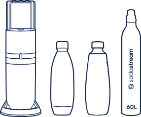
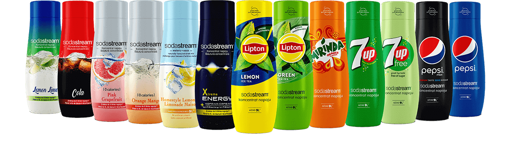

Duo
saturator
do wody gazowanej
DUO, BIAŁY
zmień swoją wodę
w gazowaną już
w kilka sekund!
Ekspres SodaStream DUO to podwójna radość z tworzenia doskonałych napojów gazowanych. Użyj eleganckiej, szklanej karafki, aby zaserwować je w domu lub weź je na wynos w poręcznej i lekkiej butelce. Ciesz się świeżymi bąbelkami gdziekolwiek jesteś i dodatkowo zadbaj o środowisko.
W ZESTAWIE ZNAJDZIESZ:
1. Biały saturator do gazowania wody SodaStream DUO.
2. Cylinder z gazem CO2 Quick Connect.
3. Butelkę SodaStream Fuse 1 litr.
4. Szklaną karafkę DUO 1 litr.
PROSTY SPOSÓB NA EKOLOGIĘ
Wyeliminuj nawet 1769* butelek plastikowych.
Pomóż także w eliminacji
do 78 miliardów
plastikowych butelek jednorazowego użytku do 2025 roku.
*ilość butelek, jaką średnio zużywa 1 gospodarstwo domowe przez 4 lata.
JAK UŻYWAĆ EKSPRESU?
1
Napełnij butelkę zimną
wodą.
2
Umieść butelkę w
saturatorze.
3
Naciśnij przycisk i
zabąbelkuj.
Zabąbelkuj tak, jak lubisz!
Dzięki ekspresowi Terra możesz uwolnić tyle bąbelków, na ile masz
właśnie ochotę.
Naciśnij przycisk raz, aby uzyskać lekko
gazowaną wodę. Naciśnij przycisk kilka
razy, aby uzyskać mocniej
nagazowaną wodę.
1-2 naciśnięcia
woda lekko
gazowana
3-4 naciśnięcia
woda średnio
gazowana
5 naciśnięć
woda mocno
gazowana
ZALETY EKSPRESU DUO
Bezprzewodowy
Kolba zabezpieczająca ze stali nierdzewnej
Łączy wygodę codziennej obsługi z pięknem sztuki użytkowej
Podwójny system gazowania
JEDNA SODASTREAM – WIELE MOŻLIWOŚCI
Poznaj również szeroką gamę syropów SodaStream, które pozwolą Ci stworzyć orzeźwiające napoje w zaciszu swojego domu. Dostępnych jest niewzykle wiele wariantów, od klasycznych cytrusowych smaków (takich jak Lemon Lime lub Lipton Lemon Ice Tea) po bardziej egzotyczne (np. Orange Mango lub Xtreme Energy). Syropy SodaStream pozwolą Ci nie tylko uzyskać doskonały smak, ale również dostosować jego intensywność do własnych preferencji.
#PushForBetter